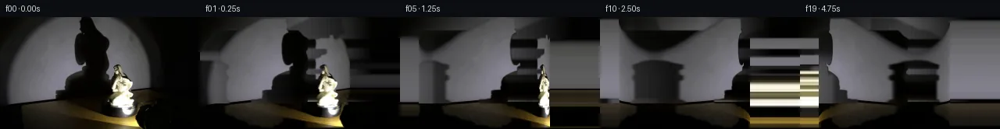

![首帧]()

Round 00
2026-11-05T19:11:18.253077+00:00像素候选变化代码 +403/−0inspection 更新
pixels dddab0efff28b53d · code 4f6507035f03f2c4
查看本轮 generate.py 真实 diff
--- previous/generate.py
+++ current/generate.py
@@ -0,0 +1,403 @@
+"""
+generate.py — PixelWorld-Text frame generation for case_0082
+Scene: Porcelain statue on clockwise-rotating platform with spotlight shadow.
+20 frames, 256×144 RGB, 4 fps, 5 seconds.
+Frame 00 == first_frame.png exactly.
+"""
+import numpy as np
+from PIL import Image, ImageDraw, ImageFilter
+from pathlib import Path
+import sys
+
+# Add current dir for artifact_io
+sys.path.insert(0, str(Path(__file__).parent))
+
+H, W = 144, 256
+NUM_FRAMES = 20
+TOTAL_TIME = 5.0 # seconds
+FPS = 4
+TOTAL_ROTATION_DEG = 120 # total clockwise rotation over 5 seconds
+
+def load_first_frame():
+ """Load the first frame as uint8 RGB array."""
+ img = Image.open(Path(__file__).parent / 'first_frame.png')
+ arr = np.array(img).astype(np.uint8)
+ assert arr.shape == (H, W, 3), f"Expected (144,256,3), got {arr.shape}"
+ return arr
+
+def to_gray(rgb):
+ """Convert RGB array to grayscale."""
+ return rgb[:,:,0].astype(float)*0.299 + rgb[:,:,1].astype(float)*0.587 + rgb[:,:,2].astype(float)*0.114
+
+def reconstruct_background(first_frame):
+ """
+ Reconstruct a clean background plate without statue or shadow.
+
+ Strategy:
+ - For the wall area (rows 0~118), use horizontal interpolation:
+ * Left reference: cols 3–20 (clean wall, no statue/shadow)
+ * Mid reference: cols 125–138 (clean spotlight area between statue and shadow)
+ * Right reference: cols 220–250 (clean dark area beyond shadow)
+ - For each row, fit a smooth curve through clean reference points
+ - For the floor/platform area (rows 118–143), use simple interpolation
+ """
+ bg = first_frame.astype(np.float64).copy()
+
+ # --- Wall area (rows 0 to 118) ---
+ # Reference X positions for horizontal interpolation
+ ref_x_left = np.arange(3, 21) # clean left wall
+ ref_x_mid = np.arange(125, 139) # clean spotlight area
+ ref_x_right = np.arange(220, 251) # clean far right
+
+ all_ref_x = np.concatenate([ref_x_left, ref_x_mid, ref_x_right])
+
+ for y in range(0, 119):
+ row = first_frame[y].astype(np.float64)
+ # Get reference values
+ ref_vals = row[all_ref_x]
+
+ # For each channel, interpolate across the full width
+ for c in range(3):
+ # Fit a smooth interpolation using the reference points
+ # We use piecewise linear interpolation between reference regions
+ bg[y, :, c] = np.interp(
+ np.arange(W),
+ all_ref_x,
+ ref_vals[:, c]
+ )
+
+ # --- Floor/platform area (rows 119 to 143) ---
+ # The floor is mostly dark and uniform. Use horizontal interpolation
+ # from left and right edges, plus the visible platform surface.
+ for y in range(119, H):
+ row = first_frame[y].astype(np.float64)
+ # Use left edge and right edge as references
+ ref_vals_L = row[5:25] # left edge
+ ref_vals_R = row[230:250] # right edge
+
+ for c in range(3):
+ bg[y, :, c] = np.interp(
+ np.arange(W),
+ np.concatenate([np.arange(5, 25), np.arange(230, 250)]),
+ np.concatenate([ref_vals_L[:, c], ref_vals_R[:, c]])
+ )
+
+ # --- Smooth the transition between wall and floor ---
+ # Apply a small vertical blur near the boundary
+ blur_zone = bg[115:125].copy()
… diff truncated; 316 more lines …